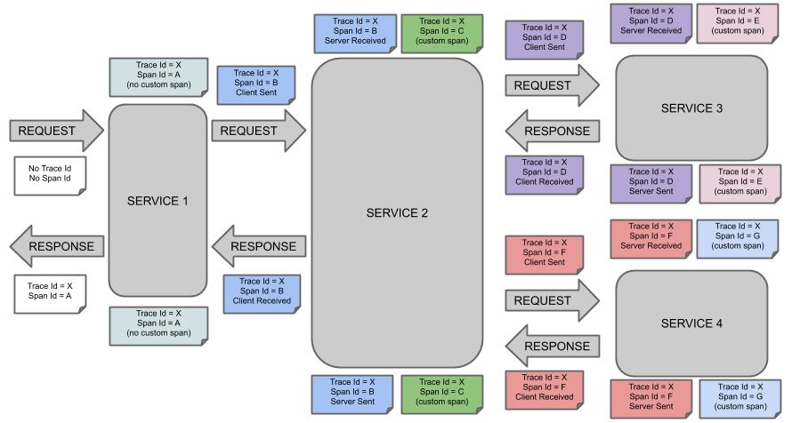

Observability cookbook:
what for, and with what
Michał Niczyporuk
@mihn
About me
- software samurai @ merXu
- 15 years of various experiences in the field
- Warsaw JUG leader
Disclaimer
This is not a deep dive
This is an introduction
Agenda
- What is observability?
- Logs & centralized logs
- Metrics
- Tracing
- Event
What is observability?
Observability
aka Observability -> o11y
The definition
“In control theory, observability is a measure of how well internal states of a system can be inferred from knowledge of its external outputs”Wikipedia
Let's ask the oracle
What for?
Way of determining state of the system
Observe trends
Spot anomalies
Debug errors
Gather data to support decision process
Logging
Primer
Don't use System.out.println()
Pick logging library: log4j or logback
Logging API: slf4j
Define logger
public class UserService {
private static final org.slf4j.Logger LOGGER =
org.slf4j.LoggerFactory.getLogger(UserService.class);
(...)
}
Use logger
private void myMethod() {
LOGGER.info("running my great code");
doBusiness();
LOGGER.info("my great code finished");
}
2023-03-21 19:24:43,829 [main] INFO UserService - running my great code
2023-03-21 19:24:43,829 [main] INFO UserService - my great code finished
"Talking to a void" debugging
private void myMethod() {
LOGGER.info("PLEASE WORK");
doBusiness();
LOGGER.info("SHOULD HAVE WORKED");
}
Dos
Don'ts
- Logs can be lost
- Logs are not metrics
- Logs are not audit trail
- Logs are not data warehouse/lake
What not to log
Centralized logs
The diary
Structure
Unified structure across your system (e.g. JSON, logfmt)
Do not try regexes if you value your time/sanity
Central storage
Software that can ingest, process and search the logs
Publishing logs
Growth rule of thumb
More traffic = more logs
Tooling
Elastic Stack = ElasticSearch + Logstack + Kibana
Whatever comes with your cloud provider
Metrics
The ledger*
Metrics are numbers, indexed in time order, across multiple dimensions
Metrics and precision
Metrics are not precise
Metrics are not precise
Metrics types
Counter
Used for: requests count, jobs completed, errors received
Gauge
Used for memory usage, thread/connection pools count, etc.
Tip: Store both current and maximum value, not the percentages
Histogram
Typically used for request durations and sizes
Calculated on server - can calculate quantiles
Summary
Histogram - but with quantiles (e.g. 50%, 95%, 99%)
Request durations and sizes
Calculated client side - lighter then histograms
What to measure?
You have to know what you want to measure
Kirk Pepperdine's The Box model
Your framework/libraries cover some basics already
Kirk Pepperdine's The Box
People: incoming requests, messages
Application (Netty, Tomcat, Spring, etc.): thread pools, queue sizes, requests...
Runtime metrics (JVM): GC, memory usage, threads...
Hardware: CPU, memory, I/O, disk usage
How to measure?
How to measure?

- Latency
- Traffic
- Errors
- Saturation
Measurement methods
RED vs USE
RED
- Rate
- Error
- Duration
Application focused
USE
- Utilization
- Saturation
- Errors
Infrastructure focused
Metric attributes
Metric resolution
How often metrics are probed
You don't need high resolution data in long term
Typical settings are: 15 seconds up to 7 days, 1 minute up to 30 days, and 1 hour up to 1 year
YMMV
Metric tags/labels
Dimensions
Metadata: HTTP attributes, service name, Hosts, AWS regions,etc.
Metrics don't like high cardinality (a lot of unique values) labels
route="/users/:id" ✅
route="/users/2137" ❌
Percentiles
Use high percentiles (95%+), not averages/means (~50%)
0.99 * 0.99 = 0.9801
0.5 * 0.5 = 0.25
Death by metrics
Storing unnecessary amount of metrics
Certainly bad for infrastructure and cloud bills
Maybe bad for your mental health
Growth rule of thumb
More traffic = same amount of metrics
Tools
Your cloud provider
Libraries:
Tracing
Traces

Do I really have to store traces for all requests?
You may not be able to store every single trace
Sample your original dataset and save only every Nth trace
Growth rule of thumb
More traffic = more traces
Tools
Abstraction API:
Storage and visualization:
APM
a rant
Highlights
Automatically instrument your application code
All in one solution
Figure out your architecture automatically
Many built-in features
Problems that I've had
APM that use reflection tend to affect performance and don't really work with nonblocking code
They like to take arbitrary decisions - like after 2 days metrics resolution changes to 1 hour
That fancy communication graphs tend to be useful only as sales pitch
Caveat emptor
APM Tools
$$$
New Relic, AppDynamics, Dynatrace, Splunk and many, many more
Open source
https://www.stagemonitor.org/
https://skywalking.apache.org/
and many more
Events
"true" observability
What are events?
Events == traces
So - what's the difference?
Event are not the super power
..the storage and query engine are
and there's one problem with it
there is only one provider (so far)
New kid on the block
Inspiration